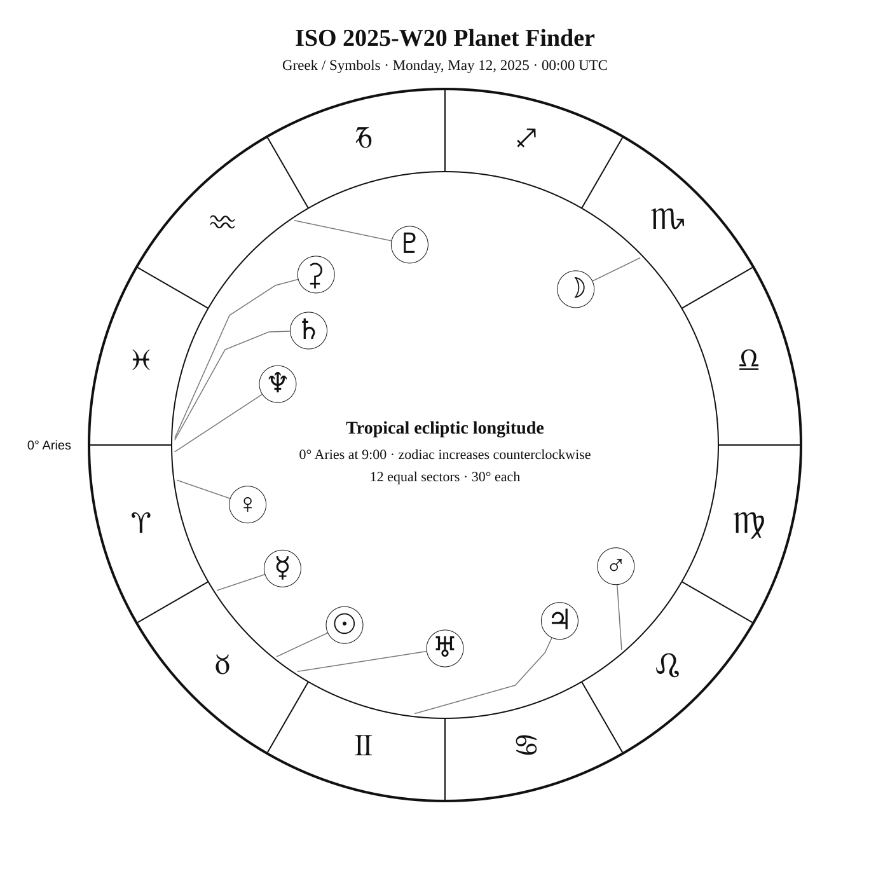
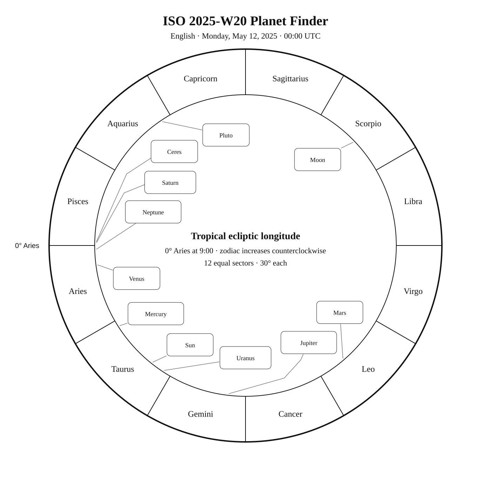
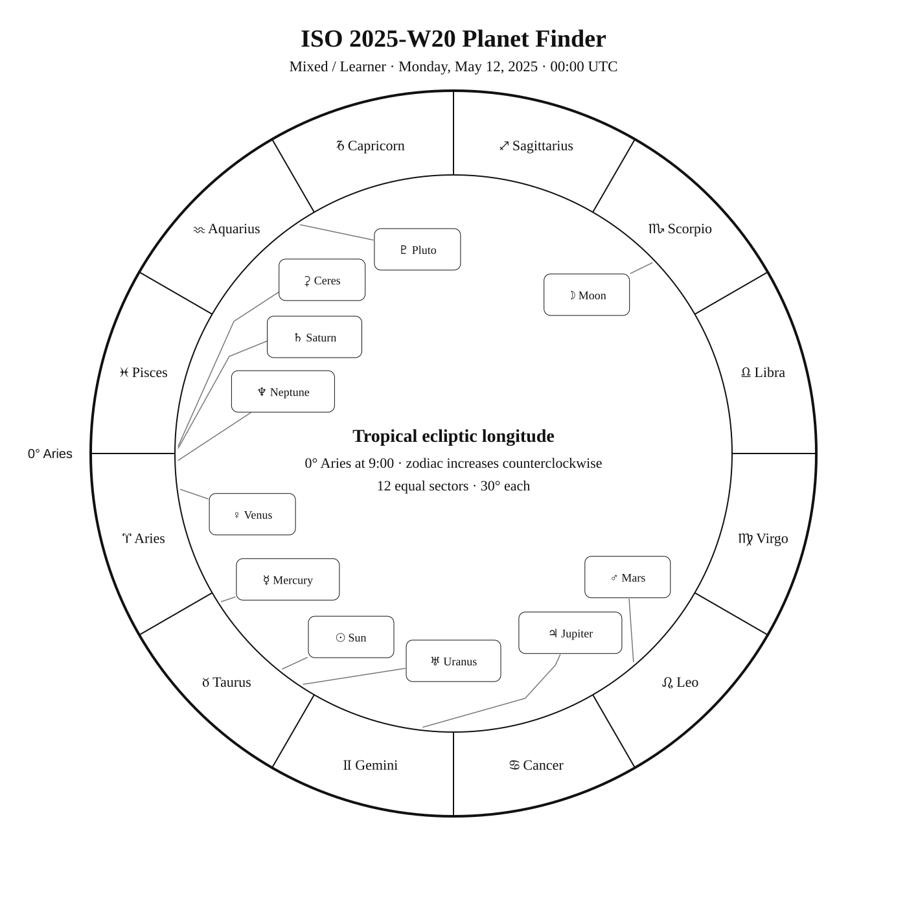

ISO 2025-W20
Week begins: Monday, May 12, 2025
Notation:
Calendar
| Date | Zodiac day | Events |
|---|---|---|
| Mon, May 12, 2025 | ♉ 24 | 🌕 Full Moon · Milk Moon — 16:55:56 UTC Finest NGC 60 / NGC 4214 · MCG 6-27-42 —  10 10.2 — Northern Spring 10 10.2 — Northern SpringFinest NGC 76 / NGC 4216 · MCG 2-31-72 — 11 11.0 — Tropical SpringC3 / NGC 4236 — 10 9.7 — Arctic SpringFinest NGC 61 / NGC 4244 · Silver Needle / C26 / NGC 4244 — 10 10.4 — Northern Springβ Cha —  4 4.2 — Antarctic Spring 4 4.2 — Antarctic Spring |
| Tue, May 13, 2025 | ♉ 25 | M99 — 10 9.9 — Tropical SpringM106 — 8 8.4 — Northern SpringFinest NGC 68 / NGC 4274 · MCG 5-29-60 — 11 11.3 — Northern SpringM61 — 10 9.7 — Tropical SpringM40 — 8 8.4 — Northern Spring |
| Wed, May 14, 2025 | ♉ 26 | M100 — 9 9.3 — Tropical SpringFinest NGC 75 / NGC 4361 — 11 10.9 — Tropical SpringM84 — 9 9.1 — Tropical SpringM85 — 9 9.1 — Tropical SpringFinest NGC 77 / NGC 4388 · MCG 2-32-41 — 12 11.9 — Tropical SpringC108 / NGC 4372 — 8 7.8 — Antarctic SpringM86 — 9 8.9 — Tropical Spring |
| Thu, May 15, 2025 | ♉ 27 | Finest NGC 69 / NGC 4414 · MCG 5-29-85 — 11 11.0 — Northern SpringAcrux (α1 Cru) —  1 1.3 — Southern Spring 1 1.3 — Southern Springα2 Cru — 2 1.6 — Southern SpringFinest NGC 78 / NGC 4438 · The Eyes with 4435 — 11 10.9 — Tropical SpringFinest NGC 62 / NGC 4449 · MCG 7-26-9 / C21 / NGC 4449 — 10 9.5 — Northern SpringM49 — 8 8.4 — Tropical Spring |
| Fri, May 16, 2025 | ♉ 28 | Finest NGC 63 / NGC 4490 · Cocoon Galaxy — 10 9.8 — Northern SpringM87 — 9 8.6 — Tropical SpringGacrux (γ Cru) — 2 1.6 — Southern SpringFinest NGC 70 / NGC 4494 · MCG 4-30-2 — 11 10.7 — Northern SpringM88 — 10 9.6 — Tropical SpringFinest NGC 79 / NGC 4517 · often mislabeled NGC 4437 — 11 11.1 — Tropical SpringChara (β CVn) — 4 4.2 — Northern SpringFinest NGC 80 / NGC 4526 · MCG 1-32-100 — 11 10.6 — Tropical Spring |
| Sat, May 17, 2025 | ♉ 29 | Finest NGC 81 / NGC 4535 · Lost Galaxy — 11 10.5 — Tropical SpringKraz (β Crv) — 3 2.7 — Tropical SpringM91 — 10 10.2 — Tropical SpringM89 — 10 9.8 — Tropical SpringFinest NGC 71 / NGC 4559 · MCG 5-30-30 / C36 / NGC 4559 — 10 10.3 — Northern SpringC38 / NGC 4565 · Needle Galaxy / Finest NGC 72 / NGC 4565 · Needle Galaxy — 10 9.6 — Northern SpringFinest NGC 82a / NGC 4567 · Siamese Twins — 12 12.1 — Tropical SpringFinest NGC 82b / NGC 4568 · Siamese Twins — 12 11.7 — Tropical SpringM90 — 10 9.5 — Tropical Springα Mus — 3 2.7 — Antarctic SpringM58 — 10 9.7 — Tropical Spring |
| Sun, May 18, 2025 | ♉ 30 | M68 — 8 7.8 — Southern SpringFinest NGC 48 / NGC 4605 · MCG 10-18-74 — 11 10.8 — Northern SpringM104 — 8 8.0 — Tropical Springγ Cen — 2 2.2 — Southern SpringM59 — 10 9.6 — Tropical SpringC32 / NGC 4631 · Whale Galaxy / Finest NGC 64 / NGC 4631 · Whale Galaxy — 9 9.3 — Northern Spring |
Weekly Solar-System Ephemeris
Snapshot: Week begins May 12, 2025, 00:00 UTC.
(-90° to +90°; defaults +45°, 21:00 LAT)
Notation:
| Body | ☉︎ | ☽︎ | ☿︎ | ♀︎ | ♂︎ | ♃︎ | ♄︎ |
|---|---|---|---|---|---|---|---|
| Ecliptic | ♉︎ 21°32′ β −0°00′ | ♏︎ 13°49′ β −3°46′ | ♉︎ 2°32′ β −2°16′ | ♈︎ 7°29′ β −0°27′ | ♌︎ 10°49′ β +1°47′ | ♊︎ 23°38′ β −0°13′ | ♓︎ 28°54′ β −2°02′ |
| Observing |  | -12.4 | ☉︎ | -4.6 | 1.1 | -2.0 | 1.1 |
| Rise | 04:39 | 18:43 | 04:04 | 02:59 | 10:13 | 06:31 | 02:50 |
| Set | 19:21 | 04:05 | 17:33 | 15:25 | 01:05 | 22:00 | 14:36 |
Extended targets:
| Body | ⚳︎ | ♅︎ | ♆︎ | ♇︎ |
|---|---|---|---|---|
| Ecliptic | ♓︎ 28°27′ β −9°00′ | ♉︎ 26°57′ β −0°13′ | ♈︎ 1°25′ β −1°17′ | ♒︎ 3°48′ β −3°35′ |
| Observing | 9.3 | ☉︎ | 7.8 | 14.5 |
| Rise | 03:26 | 04:57 | 02:51 | 00:48 |
| Set | 14:19 | 19:47 | 14:51 | 09:36 |
β = ecliptic latitude (+ north, − south).
Rise and set are Local Apparent Time for the selected latitude.
Naked-eye observing uses the Sun’s altitude at the selected Monday observer time: Daylight (Sun ≥ −0.833°), Civil twilight (−0.833° to −6°), Nautical twilight (−6° to −12°), Astronomical twilight (−12° to −18°), and Night (below −18°).
Solar Glare identifies a body too close to the Sun when the sky-state rule does not already supersede its naked-eye classification.
The Sun’s observing status uses this same five-state sky classification.
Notation:
Planet Finder



Sky Notes
Sky notes pending.